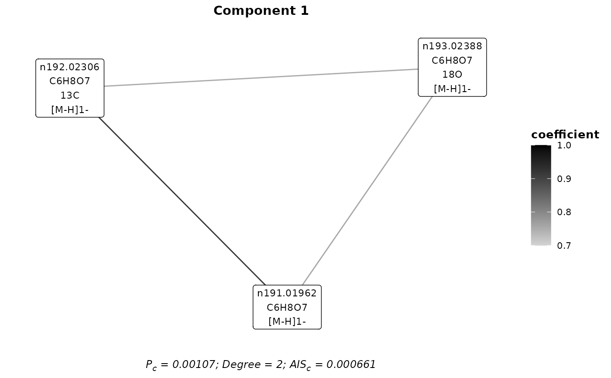
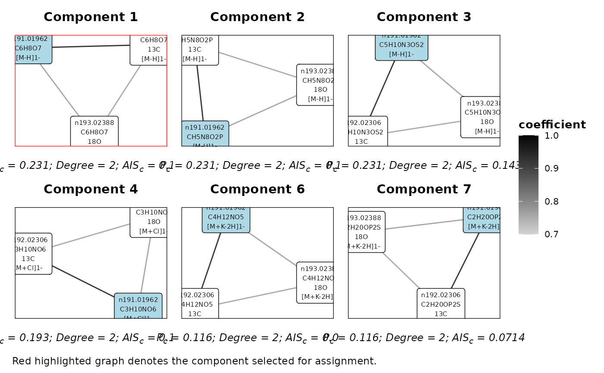

Plot assignment results
plotting.RdPlot molecular formula assignment results.
Usage
plotAdductDist(assignment)
# S4 method for Assignment
plotAdductDist(assignment)
plotComponent(
assignment,
component,
iteration,
type = c("selected", "all"),
label_size = 3,
axis_offset = 0.1,
border = NA,
highlight = NA
)
# S4 method for Assignment
plotComponent(
assignment,
component,
iteration,
type = c("selected", "all"),
label_size = 3,
axis_offset = 0.1,
border = NA,
highlight = NA
)
plotFeatureComponents(
assignment,
feature,
iteration,
type = c("all", "selected"),
max_components = 6,
label_size = 3,
axis_offset = 0.1
)
# S4 method for Assignment
plotFeatureComponents(
assignment,
feature,
iteration,
type = c("all", "selected"),
max_components = 6,
label_size = 2,
axis_offset = 0.05
)
plotSpectrum(assignment, MF)
# S4 method for Assignment
plotSpectrum(assignment, MF)Arguments
- assignment
an object of S4 class Assignment
- component
component number to plot
- iteration
the assignment iteration of the component or components
- type
the graph type to return.
selectedreturns the assignment graph after component selection.allreturns all assignment components.- label_size
node label size
- axis_offset
axis proportion by which to increase axis limits. Prevents cut off of node labels.
- border
specify a plot border colour
- highlight
specify a feature node to highlight
- feature
the m/z feature to plot
- max_components
themaximum number of components to plot
- MF
the assigned molecular formula to plot
Details
plotComponent- Plot a molecular formula component graph.plotFeatureComponents- Plot the possible component graphs for a given feature.plotAdductDist- Plot frequency distributions of the assigned adducts.plotSpectrum- Plot the spectrum of an assigned molecular formula.
Examples
library(ggraph)
#> Loading required package: ggplot2
plan(future::sequential)
p <- assignmentParameters('FIE-HRMS')
mf_assignments <- assignMFs(feature_data,p)
#>
#> assignments v1.0.0 Tue Feb 21 15:47:07 2023
#> ________________________________________________________________________________
#> Assignment Parameters:
#>
#> Technique: FIE-HRMS
#> Max M: 800
#> MF rank threshold: 3
#> PPM threshold: 6
#> Relationship limit: 0.001
#> RT limit:
#> Correlations:
#> method: spearman
#> pAdjustMethod: bonferroni
#> corPvalue: 0.05
#> minCoef: 0.7
#> maxCor: Inf
#>
#> Adducts:
#> n: [M-H]1-, [M+Cl]1-, [M+K-2H]1-, [M-2H]2-, [M+Cl37]1-, [2M-H]1-
#> p: [M+H]1+, [M+K]1+, [M+Na]1+, [M+K41]1+, [M+2H]2+, [2M+H]1+
#> Isotopes: 13C, 18O, 13C2
#> Transformations: M - [O] + [NH2], M - [OH] + [NH2], M + [H2], M - [H2] + [O], M - [H] + [CH3], M - [H] + [NH2], M - [H] + [OH], M + [H2O], M - [H3] + [H2O], M - [H] + [CHO2], M - [H] + [SO3], M - [H] + [PO3H2]
#> ________________________________________________________________________________
#> No. m/z: 10
#> Calculating correlations …
#> Calculating correlations ✔ [10 correlations] [0.4S]
#> Calculating relationships …
#> Calculating relationships ✔ [3S]
#> Adduct & isotopic assignment …
#> generating molecular formulas…
#> generating molecular formulas ✔ [39.7S]
#> iteration 1…
#> iteration 1 ✔ [1S]
#> iteration 2…
#> Adduct & isotopic assignment ✔ [42.4S]
#> Transformation assignment…
#> iteration 1 …
#> iteration 1 ✔ [2.3S]
#> iteration 2 …
#> Transformation assignment ✔ [2.4S]
#> ________________________________________________________________________________
#>
#> Complete! [48.7S]
## Plot a component
plotComponent(mf_assignments,1,'A&I1')

## Plot the components for a feature
plotFeatureComponents(mf_assignments,'n191.01962','A&I1')

## Plot the adduct distributions
plotAdductDist(mf_assignments)
## Plot the spectrum of an assigned molecular formula
plotSpectrum(mf_assignments,'C6H8O7')